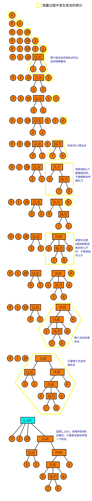

析合树
关于段的问题
我们由一个小清新的问题引入：
对于一个 1 −𝑛1−n的排列，我们称一个值域连续的区间为段．问一个排列的段的个数．比如，{5,3,4,1,2}{5,3,4,1,2}
看到这个东西，感觉要维护区间的值域集合，复杂度好像挺不友好的．线段树可以查询某个区间是否为段，但不太能统计段的个数．
这里我们引入这个神奇的数据结构——析合树！
连续段
在介绍析合树之前，我们先做一些前提条件的限定．鉴于 LCA 的课件中给出的定义不易理解，为方便读者理解，这里给出一些不太严谨（但更容易理解）的定义．
排列与连续段
排列 ：定义一个 𝑛n 阶排列 𝑃P 是一个大小为 𝑛n 的序列，使得 𝑃𝑖Pi 取遍 1,2,⋯,𝑛1,2,⋯,n．说得形式化一点，𝑛n 阶排列 𝑃P 是一个有序集合满足：
- |𝑃| =𝑛|P|=n.
- ∀𝑖,𝑃𝑖 ∈[1,𝑛]∀i,Pi∈[1,n].
- ∄𝑖,𝑗 ∈[1,𝑛],𝑃𝑖 =𝑃𝑗∄i,j∈[1,n],Pi=Pj.
连续段 ：对于排列 𝑃P，定义连续段 (𝑃,[𝑙,𝑟])(P,[l,r]) 表示一个区间 [𝑙,𝑟][l,r]，要求 𝑃𝑙∼𝑟Pl∼r 值域是连续的．说得更形式化一点，对于排列 𝑃P，连续段表示一个区间 [𝑙,𝑟][l,r] 满足：
(∄ 𝑥,𝑧∈[𝑙,𝑟],𝑦∉[𝑙,𝑟], 𝑃𝑥<𝑃𝑦<𝑃𝑧)(∄ x,z∈[l,r],y∉[l,r], Px<Py<Pz)
特别地，当 𝑙 >𝑟l>r 时，我们认为这是一个空的连续段，记作 (𝑃,∅)(P,∅)．
我们称排列 𝑃P 的所有连续段的集合为 𝐼𝑃IP，并且我们认为 (𝑃,∅) ∈𝐼𝑃(P,∅)∈IP．
连续段的运算
连续段是依赖区间和值域定义的，于是我们可以定义连续段的交并差的运算．
定义 𝐴 =(𝑃,[𝑎,𝑏]),𝐵 =(𝑃,[𝑥,𝑦])A=(P,[a,b]),B=(P,[x,y])，且 𝐴,𝐵 ∈𝐼𝑃A,B∈IP．于是连续段的关系和运算可以表示为：
- 𝐴 ⊆𝐵 ⟺ 𝑥 ≤𝑎 ∧𝑏 ≤𝑦A⊆B⟺x≤a∧b≤y.
- 𝐴 =𝐵 ⟺ 𝑎 =𝑥 ∧𝑏 =𝑦A=B⟺a=x∧b=y.
- 𝐴 ∩𝐵 =(𝑃,[max(𝑎,𝑥),min(𝑏,𝑦)])A∩B=(P,[max(a,x),min(b,y)]).
- 𝐴 ∪𝐵 =(𝑃,[min(𝑎,𝑥),max(𝑏,𝑦)])A∪B=(P,[min(a,x),max(b,y)]).
- 𝐴 ∖𝐵 =(𝑃,{𝑖|𝑖 ∈[𝑎,𝑏] ∧𝑖 ∉[𝑥,𝑦]})A∖B=(P,{i|i∈[a,b]∧i∉[x,y]}).
其实这些运算就是普通的集合交并差放在区间上而已．
连续段的性质
连续段的一些显而易见的性质．我们定义 𝐴,𝐵 ∈𝐼𝑃,𝐴 ∩𝐵 ≠∅,𝐴 ∉𝐵,𝐵 ∉𝐴A,B∈IP,A∩B≠∅,A∉B,B∉A，那么有 𝐴 ∪𝐵,𝐴 ∩𝐵,𝐴 ∖𝐵,𝐵 ∖𝐴 ∈𝐼𝑃A∪B,A∩B,A∖B,B∖A∈IP．
证明？证明的本质就是集合的交并差的运算．
析合树
好的，现在讲到重点了．你可能已经猜到了，析合树正是由连续段组成的一棵树．但是要知道一个排列可能有多达 𝑂(𝑛2)O(n2) 个连续段，因此我们就要抽出其中更基本的连续段组成析合树．
本原段
其实这个定义全称叫作 本原连续段 ．但笔者认为本原段更为简洁．
对于排列 𝑃P，我们认为一个本原段 𝑀M 表示在集合 𝐼𝑃IP 中，不存在与之相交且不包含的连续段．形式化地定义，我们认为 𝑋 ∈𝐼𝑃X∈IP 且满足 ∀𝐴 ∈𝐼𝑃, 𝑋 ∩𝐴 =(𝑃,∅) ∨𝑋 ⊆𝐴 ∨𝐴 ⊆𝑋∀A∈IP, X∩A=(P,∅)∨X⊆A∨A⊆X．
所有本原段的集合为 𝑀𝑃MP. 显而易见，(𝑃,∅) ∈𝑀𝑃(P,∅)∈MP．
显然，本原段之间只有相离或者包含关系．并且你发现 一个连续段可以由几个互不相交的本原段构成 ．最大的本原段就是整个排列本身，它包含了其他所有本原段，因此我们认为本原段可以构成一个树形结构，我们称这个结构为 析合树 ．更严格地说，排列 𝑃P 的析合树由排列 𝑃P 的 所有本原段 组成．
前面干讲这么多的定义，不来点图怎么行．考虑排列 𝑃 ={9,1,10,3,2,5,7,6,8,4}P={9,1,10,3,2,5,7,6,8,4}. 它的本原段构成的析合树如下：

在图中我们没有标明本原段．而图中 每个结点都代表一个本原段 ．我们只标明了每个本原段的值域．举个例子，结点 [5,8][5,8] 代表的本原段就是 (𝑃,[6,9]) ={5,7,6,8}(P,[6,9])={5,7,6,8}．于是这里就有一个问题：什么是析点合点？
析点与合点
这里我们直接给出定义，稍候再来讨论它的正确性．
- 值域区间 ：对于一个结点 𝑢u，用 [𝑢𝑙,𝑢𝑟][ul,ur] 表示该结点的值域区间．
- 儿子序列 ：对于析合树上的一个结点 𝑢u，假设它的儿子结点是一个 有序 序列，该序列是以值域区间为元素的（单个的数 𝑥x 可以理解为 [𝑥,𝑥][x,x] 的区间）．我们把这个序列称为儿子序列．记作 𝑆𝑢Su．
- 儿子排列 ：对于一个儿子序列 𝑆𝑢Su，把它的元素离散化成正整数后形成的排列称为儿子排列．举个例子，对于结点 [5,8][5,8]，它的儿子序列为 {[5,5],[6,7],[8,8]}{[5,5],[6,7],[8,8]}，那么把区间排序标个号，则它的儿子排列就为 {1,2,3}{1,2,3}；类似的，结点 [4,8][4,8] 的儿子排列为 {2,1}{2,1}．结点 𝑢u 的儿子排列记为 𝑃𝑢Pu．
- 合点 ：我们认为，儿子排列为顺序或者逆序的点为合点．形式化地说，满足 𝑃𝑢 ={1,2,⋯,|𝑆𝑢|}Pu={1,2,⋯,|Su|} 或者 𝑃𝑢 ={|𝑆𝑢|,|𝑆𝑢 −1|,⋯,1}Pu={|Su|,|Su−1|,⋯,1} 的点称为合点．叶子结点没有儿子排列，我们也认为它是合点 ．
- 析点 ：不是合点的就是析点．
从图中可以看到，只有 [1,10][1,10] 不是合点．因为 [1,10][1,10] 的儿子排列是 {3,1,4,2}{3,1,4,2}．
析点与合点的性质
析点与合点的命名来源于他们的性质．首先我们有一个非常显然的性质：对于析合树中任何的结点 𝑢u，其儿子序列区间的并集就是结点 𝑢u 的值域区间．即 ⋃|𝑆𝑢|𝑖=1𝑆𝑢[𝑖] =[𝑢𝑙,𝑢𝑟]⋃i=1|Su|Su[i]=[ul,ur]．
对于一个合点 𝑢u：其儿子序列的任意 子区间 都构成一个 连续段 ．形式化地说，∀𝑆𝑢[𝑙 ∼𝑟]∀Su[l∼r]，有 ⋃𝑟𝑖=𝑙𝑆𝑢[𝑖] ∈𝐼𝑃⋃i=lrSu[i]∈IP．
对于一个析点 𝑢u：其儿子序列的任意 长度大于 1（这里的长度是指儿子序列中的元素数，不是下标区间的长度） 的子区间都 不 构成一个 连续段 ．形式化地说，∀𝑆𝑢[𝑙 ∼𝑟],𝑙 <𝑟∀Su[l∼r],l<r，有 ⋃𝑟𝑖=𝑙𝑆𝑢[𝑖] ∉𝐼𝑃⋃i=lrSu[i]∉IP．
合点的性质不难证明．因为合点的儿子排列要么是顺序，要么是倒序，而值域区间也是首位相接，因此只要是连续的一段子序列（区间）都是一个连续段．
对于析点的性质可能很多读者就不太能理解了：为什么 任意 长度大于 11 的子区间都不构成连续段？
使用反证法．假设对于一个点 𝑢u，它的儿子序列中有一个 最长的 区间 𝑆𝑢[𝑙 ∼𝑟]Su[l∼r] 构成了连续段．那么这个 𝐴 =⋃𝑟𝑖=𝑙𝑆𝑢[𝑖] ∈𝐼𝑃A=⋃i=lrSu[i]∈IP，也就意味着 𝐴A 是一个本原段！（因为 𝐴A 是儿子序列中最长的，因此找不到一个与它相交又不包含的连续段）于是你就没有使用所有的本原段构成这个析合树．矛盾．
析合树的构造
对于具体构造析合树，LCA 提供了一种线性构造算法1，下面给出一种比较好懂的 𝑂(𝑛log𝑛)O(nlogn) 算法．
增量法
我们考虑增量法．用一个栈维护前 𝑖 −1i−1 个元素构成的析合森林．在这里需要 着重强调 ，析合森林的意思是，在任何时侯，栈中结点要么是析点要么是合点．现在考虑当前结点 𝑃𝑖Pi．
- 我们先判断它能否成为栈顶结点的儿子，如果能就变成栈顶的儿子，然后把栈顶取出，作为当前结点．重复上述过程直到栈空或者不能成为栈顶结点的儿子．
- 如果不能成为栈顶的儿子，就看能不能把栈顶的若干个连续的结点都合并成一个结点（判断能否合并的方法在后面），把合并后的点，作为当前结点．
- 重复上述过程直到不能进行为止．然后结束此次增量，直接把当前结点压栈．
接下来我们仔细解释一下．
具体的策略
我们认为，如果当前点能够成为栈顶结点的儿子，那么栈顶结点是一个合点．如果是析点，那么你合并后这个析点就存在一个子连续段，不满足析点的性质．因此一定是合点．
如果无法成为栈顶结点的儿子，那么我们就看栈顶连续的若干个点能否与当前点一起合并．设 𝑙l 为当前点所在区间的左端点．我们计算 𝐿𝑖Li 表示右端点下标为 𝑖i 的连续段中，左端点 <𝑙<l 的最大值．当前结点为 𝑃𝑖Pi，栈顶结点记为 𝑡t．
- 如果 𝐿𝑖Li 不存在，那么显然当前结点无法合并；
- 如果 𝑡𝑙 =𝐿𝑖tl=Li，那么这就是两个结点合并，合并后就是一个 合点 ；
- 否则在栈中一定存在一个点 𝑡′t′ 的左端点 𝑡′𝑙 =𝐿𝑖t′l=Li，那么一定可以从当前结点合并到 𝑡′t′ 形成一个 析点 ；
判断能否合并
最后，我们考虑如何处理 𝐿𝑖Li．事实上，一个连续段 (𝑃,[𝑙,𝑟])(P,[l,r]) 等价于区间极差与区间长度 -1 相等．即
max𝑙≤𝑖≤𝑟𝑃𝑖−min𝑙≤𝑖≤𝑟𝑃𝑖=𝑟−𝑙maxl≤i≤rPi−minl≤i≤rPi=r−l
而且由于 P 是一个排列，因此对于任意的区间 [𝑙,𝑟][l,r] 都有
max𝑙≤𝑖≤𝑟𝑃𝑖−min𝑙≤𝑖≤𝑟𝑃𝑖≥𝑟−𝑙maxl≤i≤rPi−minl≤i≤rPi≥r−l
于是我们就维护 max𝑙≤𝑖≤𝑟𝑃𝑖 −min𝑙≤𝑖≤𝑟𝑃𝑖 −(𝑟 −𝑙)maxl≤i≤rPi−minl≤i≤rPi−(r−l)，那么要找到一个连续段相当于查询一个最小值！
有了上述思路，不难想到这样的算法．对于增量过程中的当前的 𝑖i，我们维护一个数组 𝑄Q 表示区间 [𝑗,𝑖][j,i] 的极差减长度．即
𝑄𝑗=max𝑗≤𝑘≤𝑖𝑃𝑘−min𝑗≤𝑘≤𝑖𝑃𝑘−(𝑖−𝑗), 0<𝑗<𝑖Qj=maxj≤k≤iPk−minj≤k≤iPk−(i−j), 0<j<i
现在我们想知道在 1 ∼𝑖 −11∼i−1 中是否存在一个最小的 𝑗j 使得 𝑄𝑗 =0Qj=0．这等价于求 𝑄1∼𝑖−1Q1∼i−1 的最小值．求得最小的 𝑗j 就是 𝐿𝑖Li．如果没有，那么 𝐿𝑖 =𝑖Li=i．
但是当第 𝑖i 次增量结束时，我们需要快速把 𝑄Q 数组更新到 i+1 的情况．原本的区间从 [𝑗,𝑖][j,i] 变成 [𝑗,𝑖 +1][j,i+1]，如果 𝑃𝑖+1 >maxPi+1>max 或者 𝑃𝑖+1 <minPi+1<min 都会造成 𝑄𝑗Qj 发生变化．如何变化？如果 𝑃𝑖+1 >maxPi+1>max，相当于我们把 𝑄𝑗Qj 先减掉 maxmax 再加上 𝑃𝑖+1Pi+1 就完成了 𝑄𝑗Qj 的更新；𝑃𝑖+1 <minPi+1<min 同理，相当于 𝑄𝑗 =𝑄𝑗 +min −𝑃𝑖+1Qj=Qj+min−Pi+1.
那么如果对于一个区间 [𝑥,𝑦][x,y]，满足 𝑃𝑥∼𝑖,𝑃𝑥+1∼𝑖,𝑃𝑥+2∼𝑖,⋯,𝑃𝑦∼𝑖Px∼i,Px+1∼i,Px+2∼i,⋯,Py∼i 的区间 maxmax 都相同呢？你已经发现了，那么相当于我们在做一个区间加的操作；同理，当 𝑃𝑥∼𝑖,𝑃𝑥+1∼𝑖,⋯,𝑃𝑦∼𝑖Px∼i,Px+1∼i,⋯,Py∼i 的区间 minmin 都想同时也是一个区间加的操作．同时，maxmax 和 minmin 的更新是相互独立的，因此可以各自更新．
因此我们对 𝑄Q 的维护可以这样描述：
- 找到最大的 𝑗j 使得 𝑃𝑗 >𝑃𝑖+1Pj>Pi+1，那么显然，𝑃𝑗+1∼𝑖Pj+1∼i 这一段数全部小于 𝑃𝑖+1Pi+1，于是就需要更新 𝑄𝑗+1∼𝑖Qj+1∼i 的最大值．由于 𝑃𝑖,max(𝑃𝑖,𝑃𝑖−1),max(𝑃𝑖,𝑃𝑖−1,𝑃𝑖−2),⋯,max(𝑃𝑖,𝑃𝑖−1,⋯,𝑃𝑗+1)Pi,max(Pi,Pi−1),max(Pi,Pi−1,Pi−2),⋯,max(Pi,Pi−1,⋯,Pj+1) 是（非严格）单调递增的，因此可以每一段相同的 maxmax 做相同的更新，即区间加操作．
- 更新 minmin 同理．
- 把每一个 𝑄𝑗Qj 都减 11．因为区间长度加 11．
- 查询 𝐿𝑖Li：即查询 𝑄Q 的最小值的所在的 下标 ．
没错，我们可以使用线段树维护 𝑄Q！现在还有一个问题：怎么找到相同的一段使得他们的 max/minmax/min 都相同？使用单调栈维护！维护两个单调栈分别表示 max/minmax/min．那么显然，栈中以相邻两个元素为端点的区间的 max/minmax/min 是相同的，于是在维护单调栈的时侯顺便更新线段树即可．
具体的维护方法见代码．
讲这么多干巴巴的想必小伙伴也听得云里雾里的，那么我们就先上图吧．长图警告！

实现
最后放一个实现的代码供参考．代码转自 大米饼的博客，添加了一些注释．
---|---
## 参考文献与链接
[大米饼的博客 -【学习笔记】析合树](https://www.cnblogs.com/Paul-Guderian/p/11020708.html)
* * *
1. 刘承奥．简单的连续段数据结构．WC2019 营员交流． ↩
* * *
> __本页面最近更新： 2026/2/26 03:56:39，[更新历史](https://github.com/OI-wiki/OI-wiki/commits/master/docs/ds/divide-combine.md)
> __发现错误？想一起完善？[在 GitHub 上编辑此页！](https://oi-wiki.org/edit-landing/?ref=/ds/divide-combine.md "edit.link.title")
> __本页面贡献者：[Ir1d](https://github.com/Ir1d), [StudyingFather](https://github.com/StudyingFather), [H-J-Granger](https://github.com/H-J-Granger), [sshwy](https://github.com/sshwy), [Tiphereth-A](https://github.com/Tiphereth-A), [countercurrent-time](https://github.com/countercurrent-time), [diauweb](https://github.com/diauweb), [Enter-tainer](https://github.com/Enter-tainer), [mgt](mailto:i@margatroid.xyz), [NachtgeistW](https://github.com/NachtgeistW), [Early0v0](https://github.com/Early0v0), [xyjg](https://github.com/xyjg), [AngelKitty](https://github.com/AngelKitty), [CCXXXI](https://github.com/CCXXXI), [cjsoft](https://github.com/cjsoft), [ezoixx130](https://github.com/ezoixx130), [GekkaSaori](https://github.com/GekkaSaori), [Konano](https://github.com/Konano), [ksyx](https://github.com/ksyx), [LovelyBuggies](https://github.com/LovelyBuggies), [Makkiy](https://github.com/Makkiy), [minghu6](https://github.com/minghu6), [P-Y-Y](https://github.com/P-Y-Y), [PotassiumWings](https://github.com/PotassiumWings), [SamZhangQingChuan](https://github.com/SamZhangQingChuan), [Suyun514](mailto:suyun514@qq.com), [weiyong1024](https://github.com/weiyong1024), [Xeonacid](https://github.com/Xeonacid), [abc1763613206](https://github.com/abc1763613206), [alphagocc](https://github.com/alphagocc), [GavinZhengOI](https://github.com/GavinZhengOI), [Gesrua](https://github.com/Gesrua), [kxccc](https://github.com/kxccc), [lychees](https://github.com/lychees), [ouuan](https://github.com/ouuan), [Peanut-Tang](https://github.com/Peanut-Tang), [QAQAutoMaton](https://github.com/QAQAutoMaton), [r-value](https://github.com/r-value), [SukkaW](https://github.com/SukkaW), [swiftqwq](https://github.com/swiftqwq), [zyouxam](https://github.com/zyouxam)
> __本页面的全部内容在**[CC BY-SA 4.0](https://creativecommons.org/licenses/by-sa/4.0/deed.zh) 和 [SATA](https://github.com/zTrix/sata-license)** 协议之条款下提供，附加条款亦可能应用